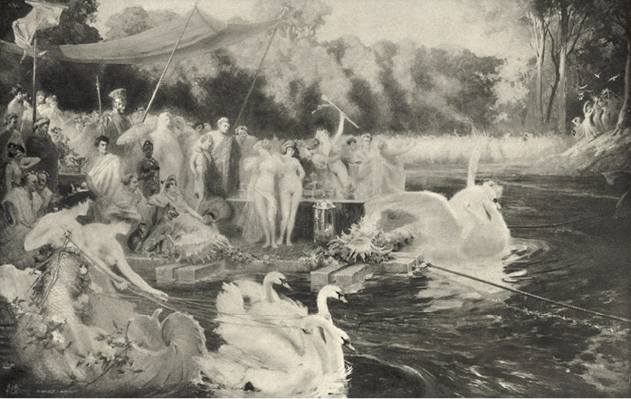

XXXI
Praetoriáni obstoupili háje, rostoucí na březích Agrippova rybníka, aby příliš veliké zástupy diváků nepřekážely Caesarovi a jeho hostům, poněvadž se beztak říkalo, že všecko, co jen se v Římě vyznamenávalo bohatstvím, duchem nebo krásou, dostavilo se na onu hostinu, která neměla sobě rovné v dějinách města. Tigellinus chtěl Caesarovi vynahraditi odloženou cestu do Achaie a zároveň překonati všecky, kteří se kdykoli starali o Nerona, a dokázati mu, že nikdo ho nedovede takto pobaviti. Za tím účelem, ještě meškaje v Neapoli, u Caesara, a pak v Beneventu, konal přípravy a posílal rozkazy, aby z nejvzdálenějších konců světa byla dopravena zvířata, ptáci, vzácné ryby a rostliny, nehledě ke příborům a tkaninám, které měly hostině dodati lesku. Příjmy z celých provincií byly věnovány k tomu, aby ukojeny byly ztřeštěné nápady, ale toho nemusil mocný favorit dbáti. Jeho vliv každým dnem vzrůstal. Tigellinus nebyl snad Neronovi dosud milejší nežli jiní, ale stával se čím dále tím nevyhnutelnějším. Petronius vynikal nad něho uhlazeností, duchem, důmyslem a při rozmluvách dovedl Caesara lépe baviti, ale ke svému neštěstí vynikal v tom i nad Caesara a tím vzbuzoval u něho závist. Nedovedl býti rovněž poslušným nástrojem ve všem a Caesar se obával jeho mínění, šlo-li o věci vkusu; naproti tomu při Tigellinovi nikdy se necítil stísněn. Samo pojmenování „arbiter elegantiarum“, jaké bylo dáváno Petroniovi, popuzovalo sebelásku Neronovu; kdo zajisté měl by je míti, ne-li on sám? Tigellinus však měl tolik rozumu, že si byl vědom svých nedostatků, a vida, že nemůže závoditi ani s Petroniem, ani s Lucanem, ani s jinými, kteří se vyznamenávali buďto rodovým původem, nebo nadáním, nebo vědou – rozhodl se, že je zastíní vydatností svých služeb a především takovou nádherou, aby i Neronova obraznost byla jimi překonána.
Rozkázal tedy, aby hostina byla uspořádána na ohromných vorech, sestavených z pozlacených klád. Jejich okraje byly vyzdobeny skvělými lasturami, ulovenými v Černém moři a v Indickém oceáně a hrajícími barvami perel a duhy. Boky byly pokryty skupinami palem, hájky lotosů a rozkvetlých růží, mezi nimiž byly ukryty fontány, tryskající vonnými proudy, sochy bohů a zlaté nebo stříbrné klece, naplněné různobarevným ptactvem. Uprostřed se vznášel obrovský stan či vlastně, aby nepřekážel v rozhledu, pouze vrchol stanu ze syrského nachu, spočívající na stříbrných sloupcích, pod ním pak se jako slunce leskly stoly, připravené pro besedníky; byly zatíženy alexandrijským sklem, křišťálem a drahocennými příbory, ukořistěnými v Itálii, Řecku a Malé Asii. Vory, mající za příčinou nahromaděných na nich rostlin podobu ostrova a zahrady, byly spojeny provazy ze zlata a nachu se čluny, jež měly podobu ryb, labutí, racků a plameňáků; v nich u barevných vesel seděli nazí veslaři a veslařky, jež se honosily vděky a tahy rozkošné krásy, vlasy upravenými po východním způsobu nebo spjatými do zlatých sítěk. Když Nero, přibyv s Poppaeou a Augustiany, zavítal na hlavní vory a usedl pod nachový stan, ony čluny sebou hnuly, vesla začala brázditi vodu, zlaté provazy se napjaly a vory i s hostinou a hostmi začaly se pohybovati a opisovati kruhy po rybníce. Obklopily je také jiné čluny a jiné menší vory, plné žen, hrajících na kytary a harfy, a jejich růžová těla v pozadí blankytu nebe a vody a v odlescích zlatých nástrojů vsakovala do sebe, jak se zdálo, ony blankyty a odlesky, měnila se a kvetla jako květy.
Z pobřežních hájů, z roztodivných domků, zúmyslně vystavěných a ukrytých v houštinách, ozvaly se rovněž ohlasy hudby a zpěvu. Zaznělo okolí, zazněly háje, ozvěny roznesly zvuky rohů a trub. Sám Caesar, maje po jedné straně Poppaeu, po druhé Pythagora, byl v údivu, a když zvláště mezi čluny se objevily mladé dívky otrokyně, převlečené za Sirény a pokryté zelenými síťkami, napodobujícími šupiny, nebyl vůči Tigellinovi skoupý na pochvaly. Ze zvyku však díval se na Petronia, chtěje seznati mínění „arbitra“, ale ten se dlouhou dobu choval netečně a teprve, když byl tázán, odvětil bez obalu:
„Mám za to, pane, že deset tisíc nahých dívek činí menší dojem nežli jedna.“
Nicméně Caesarovi se líbila „plovoucí hostina“, poněvadž byla čímsi novým. Ostatně byla jako obyčejně podávána jídla tak vybraná, že by i Apitiova obraznost byla u vytržení při pohledu na ně, a vína v tolika druzích, že Otho, který jich podával osmdesát, byl by se schoval pod vodou studem, kdyby mohl viděti onen přepych. Ke stolu ulehli kromě žen Augustiani, které všechny zastiňoval Vinitius krásou. Jeho postava i tvář kdysi příliš vyznačovaly vojína z povolání; nyní vnitřní bolestí a fysickým utrpením, jež přestál, zjemnily se jeho tahy tak, jako by po nich přešla ruka mistra sochaře. Jeho pleť pozbyla dřívější snědosti, ale zůstaly jí zlatisté odlesky numidského mramoru. Oči se zvětšily a zesmutněly. Pouze jeho poprsí zachovalo dřívější formy, bylo jako stvořeno pro pancéř, ale nad oním poprsím legionáře bylo viděti hlavu řeckého boha, nebo aspoň rafinovaného patricia, jemnou a přitom nádhernou. Petronius, říkaje mu, že žádná z Augustianek ani nedovede, ani nebude chtíti se mu vzpírati, mluvil jako zkušený člověk. Dívaly se teď na něho všecky, nevyjímaje Poppaeu ani vestálku Rubrii, kterou si Caesar přál míti u hostiny.
Vína, chlazená sněhem z hor, záhy rozehřála srdce i hlavy besedníků. Z pobřežních houštin vynořovaly se stále nové čluny v podobě polních koníků a vážek. Modravá hladina rybníka vypadala, jako by ji někdo posypal plátky květů nebo jako by ji obsedli motýlové. Nad čluny se vznášeli tu a tam na stříbrných a modrých nitích nebo šňůrkách přivázaní holubi a jiní ptáci z Indie a Afriky. Slunce již urazilo většinu dráhy na nebi, ale den, ačkoli se hostina konala začátkem května, byl teplý, ano i parný. Rybník se čeřil pod nárazy vesel, která se hroužila do hlubiny podle taktu hudby, ale ve vzduchu nebylo nejmenšího vánku a háje znehybněly, jakoby byly zaposlouchány nebo zahleděny do toho, co se dělo na vodě. Vory stále kroužily po rybníku, vozíce čím dále tím opilejší a tím více hulákající besedníky. Hostina ještě nedospěla poloviny, a přece nedbáno již pořádku, v jakém všichni si lehli ke stolu. Sám Caesar dal příklad, neboť povstav, rozkázal, aby Vinitius, který spočíval na lehátku vedle Rubrie, postoupil mu své místo, a zaujav jeho triclinium, začal jí cosi šeptati do ucha. Vinitius octl se u Poppaey, která za chvíli natáhla k němu ruku, žádajíc, aby jí zapnul uvolněný náramek, a když tak učinil rukama poněkud se třesoucíma, vrhla mu zpod svých dlouhých řas jakýsi ostýchavý pohled a zavrtěla svou zlatou hlavou, jako by něčemu odporovala. Zatím se slunce zvětšilo, více zčervenalo a zvolna se stáčelo za vrcholky hájů; hosté byli většinou úplně opilí. Vory nyní kroužily blízko břehů, na nichž mezi skupinami stromů a květin bylo viděti hloučky lidí, přestrojené za fauny nebo satyry, hrající na flétny, moldánky1 a bubínky, jakož i hloučky dívek, představujících nymfy, dryády2 a hamadryády. Soumrak se konečně snášel za výkřiků zpitých besedníků ku poctě Luny a ty výkřiky vycházely zpod stanu; tehdy zazářily háje tisícerými lampami. Z lupanarů, umístěných na břehu, vynořily se roje světel; na terasách se ukázaly nové skupiny žen, rovněž nahých, skládajících se z manželek a dcer předních domů římských. Ty začaly hlasem a nestoudnými pohyby vábiti besedníky. Vory přirazily konečně ke břehu. Caesar a Augustiani odkvapili do hájů, rozptýlili se po lupanarech, po stanech ukrytých v houští, ve slujích, uměle zařízených mezi prameny a fontánami. Bezuzdná vášeň zachvátila všecky; nikdo nevěděl, kam se poděl Caesar, kdo je senátor, kdo rytíř, kdo tanečník či hudebník. Satyrové a fauni začali se s křikem honiti za nymfami. Tlouklo se thyrsy do lamp, aby byly zhašeny. Některé části hájů se zahalily ve tmu. Ale všude bylo slyšeti tu hlasité výkřiky, tu smíchy, tu šepot, onde upachtěný dech lidských prsou. Řím opravdu neviděl dosud ničeho podobného.

Nero, přibyv s Poppaeou a Augustiany, zavítal na hlavní vory…
Vinitius nebyl opilý jako na oné hostině v paláci Caesarově, na které byla Lygie, ale i jej oslnil a opojil pohled na všecko, co se dělo, až konečně jej zachvátila horečka rozkoše. Vyběhnuv do lesa, pádil spolu s ostatními, rozhlížeje se, která z dryád se mu bude zdáti nejkrásnější. Přes tu chvíli přebíhaly mimo něho se zpěvem a výskáním stále nové jejich houfy, pronásledované fauny, satyry, senátory, rytíři a zvuky hudby. Konečně zahlédnuv průvod panen, vedený jednou z nich, přestrojenou za Dianu, přiskočil k němu, chtěje zblízka pohlédnouti na bohyni, a pojednou mu srdce zemřelo v prsou. Připadalo mu totiž, že v bohyni s měsícem na hlavě poznává Lygii.
Dívky jej obstoupily v třeštivém chorovodu a za chvíli, chtějíce jej patrně přiměti k tomu, aby je pronásledoval, rozprchly se jako stádo srn. On však zůstal na místě s tlukoucím srdcem, bez dechu, neboť přesto, že poznal, že Diana nebyla Lygií a ani zblízka nebyla jí podobna, příliš mocný dojem zbavil ho sil. Pojednou byl jat tak nesmírným steskem po Lygii, jakého nikdy v životě nezakusil, a láska k ní vrhla se mu novou, obrovskou vlnou do hrudi. Nikdy mu nepřipadala dražší, čistší, milovanější jako v tomto lese třeštivé vášně a divoké prostopášnosti. Před chvílí chtěl sám píti z toho poháru a účastniti se onoho rozpoutání smyslných chtíčů a nestoudnosti, nyní však byl jat odporem a ošklivostí. Ucítil, že jej dusí hnus, že jeho prsa potřebují vzduchu a oči hvězd, nezatemnělých houštinami tohoto strašlivého háje, i rozhodl se, že prchne. Sotva však sebou hnul, stanula před ním jakási postava s hlavou, zahalenou do závoje, a opřevši se rukama o jeho ramena, začala mu šeptati, zalévajíc mu tvář horkým dechem:
„Miluji tě…! Pojď! Nikdo nás nespatří! Pospěš si!“
Vinitius jako by se probudil ze sna.
„Kdo jsi?“
Ona však se o něho opřela prsy a začala naléhati:
„Pospěš si! Hleď, jak je tu prázdno, a já tě miluji! Pojď!“
„Kdo jsi?“ opakoval Vinitius.
„Hádej!“
To řkouc, přitiskla skrze závoj rty na jeho ústa, současně přitahujíc k sobě jeho hlavu, až konečně, když se jí zatajil dech, odtrhla tvář od něho.
„Noc lásky…! Noc zapomenutí!“ mluvila, rychle lapajíc vzduch. „Dnes je to dovoleno…! Zde mne máš!“
Ale Vinitia pálil onen polibek a naplnil jej novou ošklivostí. Jeho duše a srdce dlely kdesi jinde a na celém světě nebylo pro něho nic kromě Lygie.
Odstrčiv tedy od sebe postavu, zahalenou v závoj, řekl:
„Ať jsi kdokoli, miluji jinou a nechci tě!“
Ale ona sklonila k němu hlavu.
„Odhrň závoj…!“
V té chvíli však zašustilo listí blízko myrt, postava zmizela jako snivý přelud, pouze zpovzdálí rozlehl se její smích nějak divoký a zlověstný.
Petronius stanul před Vinitiem.
„Slyšel jsem a viděl,“ řekl.
Vinitius pak odpověděl:
„Pojďme odtud…!“
A šli. Minuli světlem planoucí lupanary, háj, řetěz jízdných praetoriánů a nalezli lektiky.
„Přisednu si k tobě!“ řekl Petronius.
A vsedli společně. Cestou však mlčeli oba. Teprve, když se octli v atriu Vinitiova domu, Petronius řekl:
„Víš, kdo to byl?“
„Rubrie?“ tázal se Vinitius, otřásaje se při pouhé myšlence, že Rubrie byla vestálkou.
„Ne.“
„Nuže, kdo?“
Petronius snížil hlas.
„Vestin oheň byl znesvěcen, protože Rubrie byla s Caesarem. S tebou pak mluvila…“
Tu dokončil ještě tišeji:
„Diva Augusta.“
Nastala chvíle mlčení.
„Caesar,“ řekl Petronius, „nedovedl před ní utajiti svou vášeň k Rubrii, a snad proto se chtěla pomstíti; já pak jsem vám v dalším zabránil, protože kdybys poznav Augustu, byl ji odmítl, bylo by neodvratně veta po tobě, po Lygii a snad i po mně!“
Ale Vinitius propukl:
„Mám dosti Říma, Caesara, hostin, Augusty, Tigellina i vás všech! Dusím se! Nemohu takto žíti, nemohu! Chápeš mne?“
„Pozbýváš rozumu, soudnosti a umírněnosti…! Vinitie!“
„Miluji pouze ji jedinou na světě!“
„Nu, a co?“
„Nuže, nechci jiné lásky, nechci vašeho života, vašich hostin, vaší nestoudnosti a vašich zločinů!“
„Co se to s tebou děje? Jsi křesťan?“
Ale mladý člověk chytil se rukama za hlavu a jal se opakovati jako v zoufalství:
„Ještě ne! Ještě ne!“